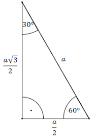
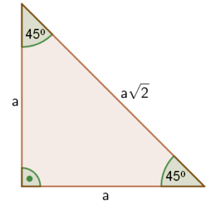

1. GEOMETRIA
1.1 WZORY:
POLE KWADRATU - A² albo ½*D1*D2
POLE PROSTAKĄTA - A*B
POLE TRÓJKĄTA - ½*A*H
POLE TRÓJKĄTA RÓWNOBOCZNEGO - ¼*A²*√3
POLE TRAPEZU - ½*(A+B)*H
POLE ROMBU - A*H albo ½*D1*D2
POLE KOŁA - π*R²
1.2 TRÓJKĄTY:
TRÓJKĄT 30° I 60°

TRÓJKĄT 45° I 45°

2. GEOMETRIA PRZESTRZENNA
2.1 WZORY:
POLE GRANIASTOSŁUPA - Pp*H
POLE OSTROSŁUPA - ⅓Pp*H
TWIERDZENIE PITAGORASA - A²+B²=C²